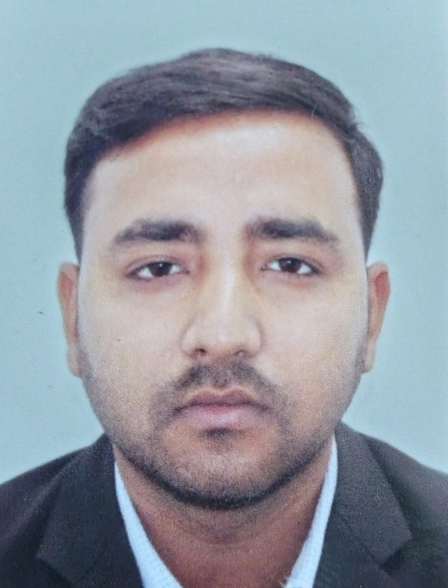
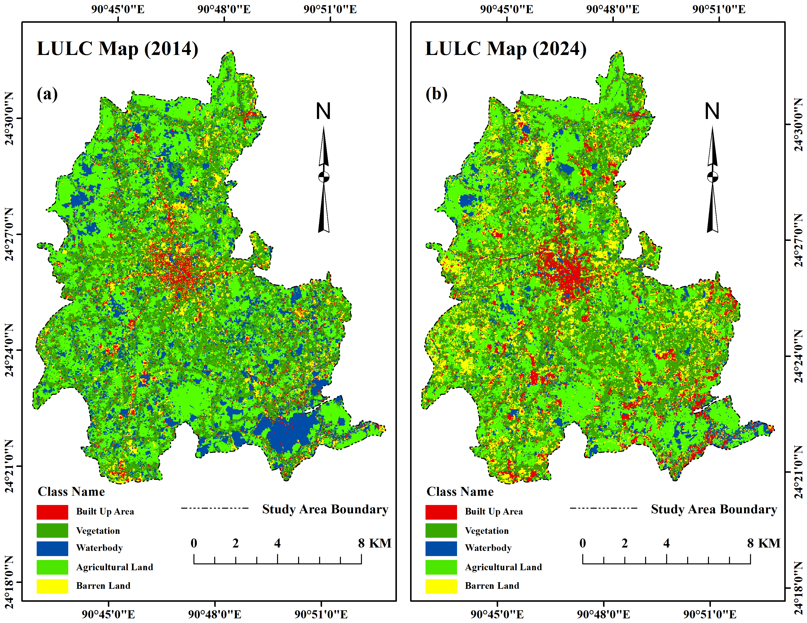

Pranta Bhowmik
MSc student in Georesources Management at RWTH Aachen University, Germany, with research experience in GIS, remote sensing, hydrogeology, groundwater assessment, flood-risk mapping and environmental quality assessment.

About Me
I am an MSc student in Georesources Management at RWTH Aachen University, Germany, with a bachelor's background in Geography and Environment from Shahjalal University of Science and Technology, Bangladesh. My research interests include hydrogeology, groundwater assessment, flood-risk mapping, environmental quality assessment and geospatial environmental modelling.
My research applies GIS, remote sensing, spatial analysis, multi-criteria methods and data-driven approaches to investigate environmental challenges. I am interested in developing reliable geospatial evidence to support environmental assessment and sustainable resource management.
Education
MSc in Georesources Management
RWTH Aachen University, Aachen, Germany
BSc in Geography and Environment
Shahjalal University of Science and Technology (SUST), Sylhet, Bangladesh
Research
My research focuses on applying geospatial techniques to understand groundwater resources, environmental change and natural hazards.
Current Research
Spatio-Temporal Assessment of Environmental Quality in Mymensingh District, Bangladesh Using Multi-Source Remote Sensing and GIS
This research investigates the spatial and temporal patterns of environmental quality in Mymensingh District, Bangladesh, using multi-source remote sensing data and GIS-based spatial analysis.
Methodology: Principal Component Analysis (PCA), multi-source remote sensing and GIS techniques.
Research Focus:
PCA Remote Sensing GIS Environmental Quality Spatio-Temporal AnalysisPublications
Bhowmik, P., Laskor, M. A. H., Bhowmik, A., & Islam, M. M. (2026).
Comparative assessment of flood risk using AHP and machine learning models in Kurigram District, Bangladesh.
Journal of Geospatial Science and Analytics, 2(2), 159–186.
View publication and DOI ↗Bhowmik, P., Laskor, M. A. H., & Islam, M. M. (2026).
Geospatial analysis of urbanization and land use/land cover change in Kishoreganj Sadar Upazila, Bangladesh (2014–2024).
Applied Geomatics, 18, 159.
View publication and DOI ↗Manuscripts Under Review
Assessing Groundwater Sustainability in Intensive Agricultural Zones: A GIS-AHP Approach in Kishoreganj District, Bangladesh
This manuscript investigates groundwater potential and sustainability in intensive agricultural zones using GIS-based multi-criteria analysis and hydrogeological and environmental factors.
Research Experience
Flood Risk Mapping — Kurigram District
Compared GIS-AHP and machine learning approaches to assess and map flood-risk zones in Kurigram District, Bangladesh.
GIS AHP Random Forest Decision Tree SVM
.png)
Flood Risk Index maps comparing AHP and machine-learning models.
Groundwater Potential Assessment
Applied GIS and AHP-based spatial modelling to assess groundwater potential using hydrogeological and environmental factors in Kishoreganj District, Bangladesh.
Hydrogeology GIS-AHP Groundwater

GIS-AHP-based groundwater potential zones in Kishoreganj District.
Urbanization and LULC Change
Investigated urbanization and land-use/land-cover changes in Kishoreganj Sadar Upazila, Bangladesh, during 2014–2024.
Remote Sensing LULC Change Detection

Land Use/Land Cover classification for 2014 and 2024.
Environmental Quality Assessment
Conducted GIS-based environmental quality assessment associated with air pollution in Sylhet Commercial Zone.
Environmental GIS Spatial AnalysisConference Presentations
Groundwater Modelling and More 2026
Princeton University, USA · June 2026
Groundwater Potential Assessment in the Intensive Agricultural Zones of Kishoreganj District, Bangladesh Using GIS and AHP.
Poster PresentationInternational Conference on the Role of Science and Technology towards 4IR
University of Rajshahi, Bangladesh · October 2023
- Public Health Appearance through GIS Techniques: A Case Study of Ward–03, Sylhet City Corporation.
- Assessment of LULC Change Using GIS Techniques: A Case Study of Sylhet City Corporation, Bangladesh.
- Assessing the Quality of Life Among Individuals of Ward–03, Sylhet City Corporation — Poster Presentation.
Work Experience
Lecturer in Geography
Kishoreganj City College, Bangladesh
Delivered courses in Physical and Human Geography, emphasizing environmental sustainability, GIS, spatial analysis and real-world problem-solving skills.
Research Assistant
University Research Center, SUST
- Climate Migration and Land Use Transformation of the Southeastern Highland of Bangladesh — July 2022–June 2023.
- Assessment of Ecological Threat to the Coastal Wetlands of Bangladesh (Sonadia Islands) — July 2020–June 2021.
Contributed to spatial analysis, remote sensing, survey-data integration, ecological vulnerability assessment and mapping.
Technical Skills
GIS & Remote Sensing
ArcGIS Pro ArcGIS 10.8Programming & Data Analysis
Python R Machine Learning SPSSVisualization & Design
Adobe Illustrator Adobe Photoshop MS OfficeTraining & Certifications
Application of ArcGIS Pro for Regional Planning
GEE Society, SUST · 2024
Fecal Sludge Management in Cities
Department of Civil and Environmental Engineering, SUST · 2022
Coastal and Marine Disaster: Bangladesh Perspective
DRTMC, University of Dhaka · 2022
Leadership & Organizational Activities
Sports Secretary and Publicity Secretary
GEE Society, SUST · 2022–2024
Publication Secretary
YouthMappers at SUST · 2022–2023
Organizational Staff Coordinator
Hult Prize, SUST · 2022–2023
Academic CV & Contact
Pranta Bhowmik
Aachen, North Rhine-Westphalia, Germany
Email: prantabhowmik93@gmail.com
LinkedIn: View LinkedIn Profile ↗